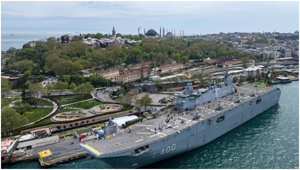
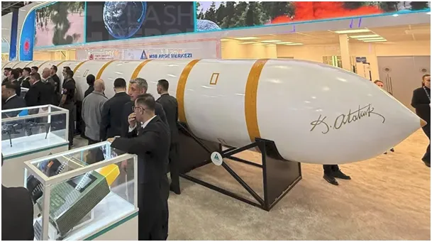
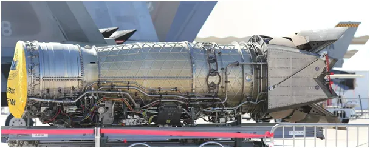
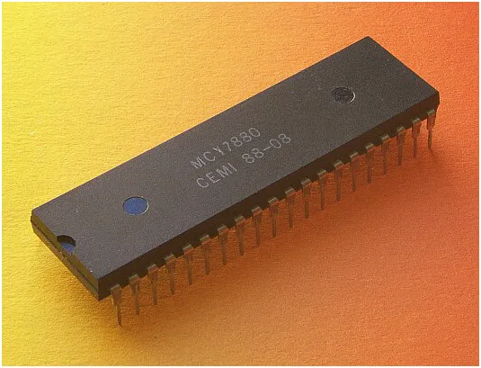
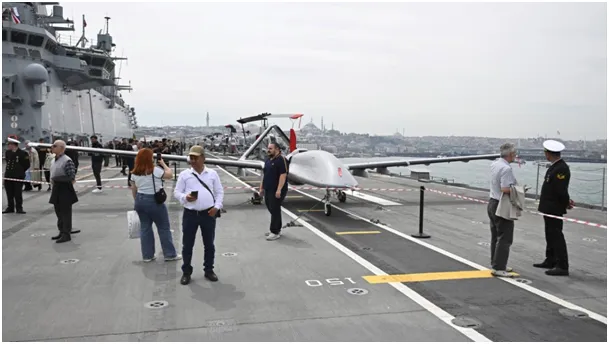

Jak uciekł nam pociąg “Trzeci świat” relacji przeszłość - przyszłość.
Turcy prężą muskuły. Majówka w Stambule to idealny czas na zwiedzanie tego 20+ milionowego miasta nad Bosforem zacumowana duma Turków, ich pierwszy lotniskowiec. Budują kolejne dwa, w tym jeden o wyporności jak największe giganty USA.
Gdy w Moskwie Rosjanie swoją potęgę schowali w garażach na targach zbrojeniowych w Stambule Turcy zaprezentowali w 100% swoje:
A/ Międzykontynentalną rakietę balistyczną Yildirimhan o zasięgu 6000 km, nośności głowic o masie 3000 kg i szybkości ataku 25 machów.

B/ Własny silnik do własnych myśliwców V generacji bijący na głowę dotychczasowych liderów USA, Wielką Brytanię oraz Rosję.

W ten sposób z " wielkiej piątki mocarstw technologiczno - militarnych mamy już wielką szóstkę: USA, Chiny, Rosja, Wielka Brytania, Francja i Turcja. Realna kolejność zostanie ustalona w najbliższych latach, gdy francuski, jedyny lotniskowiec zostanie unieruchomiony. Turecki, dwusilnikowy myśliwiec będzie szybszy od F-35 o 300 km/h.
Jednocześnie w Turcji toczy się społeczna dyskusja o potrzebie posiadania własnej broni jądrowej, 70% jest za- w obliczu arsenału jądrowego rzymian i programu jądrowego Iranu. Turcy właśnie uruchamiają elektrownię jądrową i otwarcie rozmawiają o ryzyku związanym z użyczania swych baz dla pocisków jądrowych z USA skierowanych na: Rosję, Iran, Pakistan i Chiny. Te kraje to główni partnerzy handlowi Turcji przy jednoczesnej współpracy wojskowej.
A w 1981 roku byliśmy w identycznej sytuacji po przewrotach wojskowych pod rządami generałów, ale Polska wtedy była nieporównywalnie bardziej uprzemysłowiona i zaawansowana technologicznie od Turcji. Jak to szybko poszło...

Na ostatniej fotografii MCY7880, polska wersja 8-bitowego mikroprocesora Intel 8080, wtedy światowa czołówka. USA zbudowały na Intelu swoją krzemową potęgę. Nasz mikroprocesor z CEMI w Warszawie został symbolicznie zaorany przez umowny duet Jaruzelskiego i Balcerowicza, choć premierów niszczących Polskę z tego okresu i późniejszego można by wymieniać wielu. Tak to uciekł nam pociąg "Trzeci świat" relacji przeszłość - przyszłość.

Foto: Spacer po Stambule 2026, w Warszawie zapewne przejdzie parada najładniejszych "śmieszków" wśród "terytorialsów".
Strategia PRL-bis 2026+: KKDSW-BWU-LWR (Każdą kasę da się wydać, byle w USA lub RFN)
Moje wideo w tej sprawie: "Bardzo gorąco na linii Turcja - inne Państwo na I." U Piotra Szlachtowicza w perskiej koszuli komentuje Paweł Klimczewski. Zapraszam serdecznie! https://youtu.be/iUSCxnu5GmA
Paweł Klimczewski